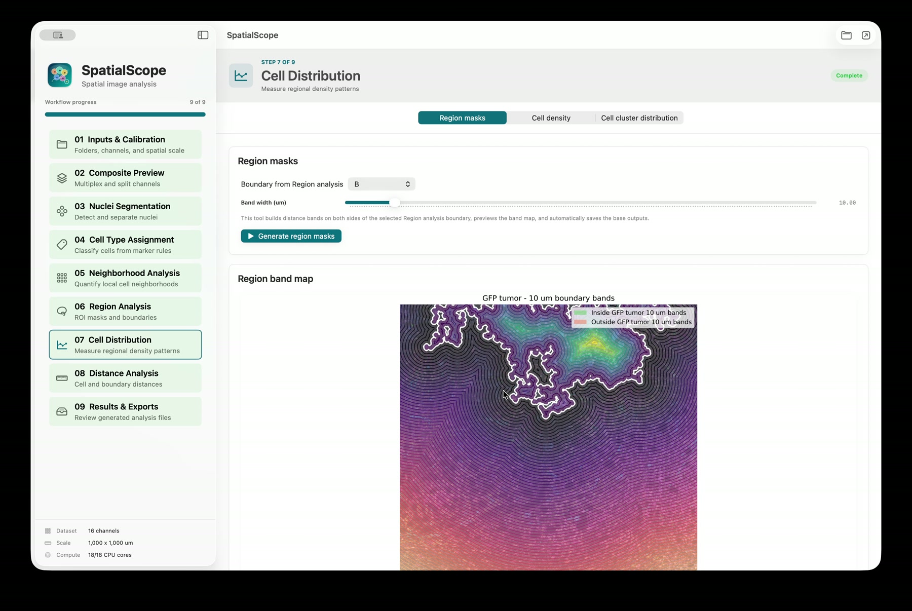

SpatialScope is the renamed, native successor to the published Streamlit prototype. The legacy repository and website remain available for reproducibility and existing article links.
Nine connected stages
One analysis workspace
Each stage preserves parameters and writes figures, masks, tables, and metadata into a predictable output structure.
- 01Inputs & CalibrationFolders, channels, and spatial scale
- 02Composite PreviewMultiplex and split channels
- 03Nuclei SegmentationDetection and parameter screening
- 04Cell Type AssignmentRule-based marker phenotypes
- 05Neighborhood AnalysisLocal cell composition
- 06Region AnalysisComputational and manual ROIs
- 07Cell DistributionBoundary bands and density
- 08Distance AnalysisCell and boundary distances
- 09Results & ExportsReview the generated package
Inspect the actual outputs
Spatial results stay connected to the image
Region boundaries, distance bands, density summaries, and neighborhood classes remain available as both figures and machine-readable data.
Compare SpatialScope with QuPath
Cross-platform test data
Run the complete workflow
Download aligned input matrices and inspect example outputs provided by Dr. Ling Wu from the Zhang Lab. The same dataset works with SpatialScope on macOS and Windows.
Download and extract the demonstration dataset.
Select test_input_files and choose a new, empty output folder.
Run the nine stages and compare the generated results with test_output_files.
Direct distribution
Install from GitHub
Download the macOS DMG or the Windows setup program from its platform release.
Approve the independently distributed app once through Gatekeeper or Windows SmartScreen.
Use Check for Updates on macOS or Windows; verified Windows updates install and reopen automatically after approval.
Recommended citation
Research built for reproducibility
Xu Z, Liu F, Ding Y, et al. “Unbiased niche labeling maps immune-excluded niche in bone metastasis.” Cell (2026).
View DOI 10.1016/j.cell.2026.04.009